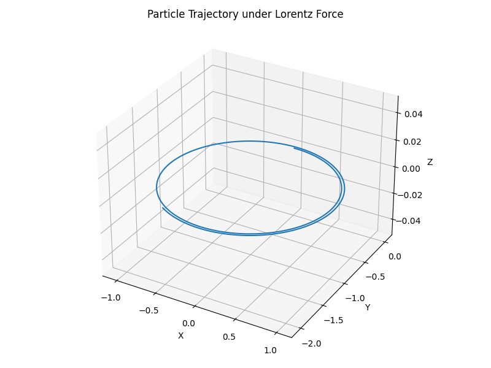

Problem 1
⚡ The Lorentz Force in Action: Simulating Charged Particle Motion
📌 1. Introduction
The Lorentz force governs how charged particles move in the presence of electric and magnetic fields:
Where: - \(\vec{F}\): Total force on the particle
-
\(q\): Particle charge
-
\(\vec{E}\): Electric field
-
\(\vec{v}\): Particle velocity
-
\(\vec{B}\): Magnetic field
This principle is fundamental in fields such as:
-
Particle accelerators
-
Mass spectrometry
-
Plasma confinement systems
-
Astrophysical particle dynamics
🔬 2. Exploration of Applications
| System | Role of Lorentz Force |
|---|---|
| Cyclotrons | Magnetic fields bend charged particles into circular paths. |
| Mass Spectrometers | Electric and magnetic fields help identify ions by their mass-to-charge ratio. |
| Plasma Confinement (e.g., Tokamaks) | Magnetic fields confine plasma and control its motion. |
| Auroras / Astrophysics | Charged particles spiral along Earth’s magnetic field lines. |
🧪 3. Simulation Setup
We’ll simulate particle motion under:
-
Uniform magnetic field
-
Uniform electric + magnetic fields
-
Crossed electric and magnetic fields (E ⊥ B)
We’ll solve Newton’s second law: $$ m\frac{d\vec{v}}{dt} = q\vec{E} + q\vec{v} \times \vec{B} $$
✅ Features:
-
Adjustable \(\vec{E}, \vec{B}, q, m, \vec{v_0}\)
-
2D and 3D plots of trajectories
-
Real-time visualization
🧮 4. Python Code Snippet (Skeleton)
import numpy as np
import matplotlib.pyplot as plt
from mpl_toolkits.mplot3d import Axes3D
# Constants
q = 1.0 # Charge
m = 1.0 # Mass
dt = 0.01 # Time step
steps = 1000
# Fields
E = np.array([0.0, 0.0, 0.0]) # Electric field
B = np.array([0.0, 0.0, 1.0]) # Magnetic field
# Initial conditions
v = np.array([1.0, 0.0, 0.0]) # Initial velocity
r = np.array([0.0, 0.0, 0.0]) # Initial position
trajectory = []
# Time evolution
for _ in range(steps):
# Store current position
trajectory.append(r.copy())
# Compute Lorentz force
F = q * (E + np.cross(v, B))
a = F / m
# Update velocity and position
v = v + a * dt
r = r + v * dt
trajectory = np.array(trajectory)
# Visualization
fig = plt.figure(figsize=(8, 6))
ax = fig.add_subplot(111, projection='3d')
ax.plot(trajectory[:, 0], trajectory[:, 1], trajectory[:, 2])
ax.set_title("Particle Trajectory under Lorentz Force")
ax.set_xlabel("X")
ax.set_ylabel("Y")
ax.set_zlabel("Z")
plt.tight_layout()
plt.show()

🔄 5. Parameter Exploration
Try modifying these: - \(B = [0, 0, 1] \rightarrow [0, 1, 1]\)
-
\(E = [0, 0, 0] \rightarrow [1, 0, 0]\)
-
\(q = +1 \rightarrow -1\)
-
\(v_0 = [1, 0, 0] \rightarrow [1, 1, 0]\)
Observe: - Circular motion under only B
-
Helical motion with both E and B
-
Drift motion in crossed E and B
📊 6. Visualizations
We'll generate:
-
2D XY/ZY projections for planar motion
-
3D plots for helices and drifts
-
Optionally: animation of the path over time
💡 7. Discussion: Real-World Implications
| System | What Simulation Shows |
|---|---|
| Cyclotron | Circular motion in constant B field. Frequency depends on $ q/m $. |
| Mass Spectrometer | Trajectories bend more for lighter particles. |
| Magnetic Traps | Particles spiral and are confined in B field “bottles”. |
🧠 8. Future Extensions
-
Non-uniform fields: Varying \(\vec{E}(r), \vec{B}(r)\)
-
Relativistic corrections for high-speed particles
-
Collisions: Add interactions between particles
-
Multiple particles: Simulate beam dynamics or plasma